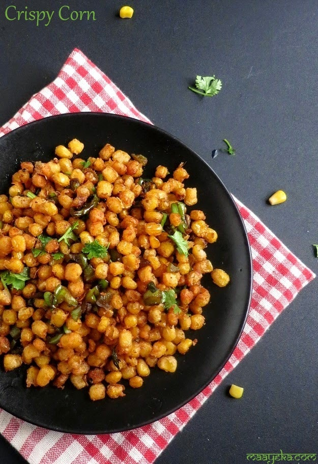

Fried Corns

Description
A Finished Latte
Ingredients
- 0.5 kg of frozen or fresh corns
- 3 table spoon of fish sauce
- 3 table spoon of sugar
Steps
- Heat up the oil on the pan
- Fry the corns until being soft
- Put all the additives and quickly stir the corns
Home